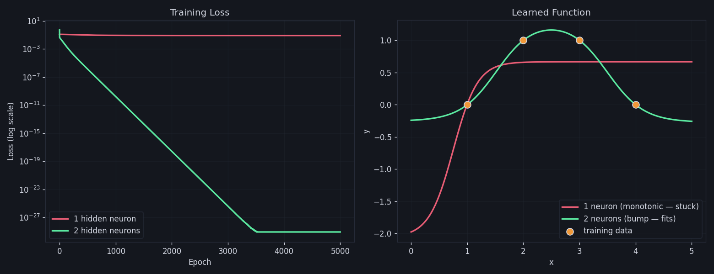

An intuitive walk through neural networks — building on what you already know about linear regression.
In linear regression, you have:
You try every possible line (infinite configurations of w and b). For each line, you measure how far its predictions are from the actual points — that total distance is the cost. You take the derivative of the cost, find where it's smallest, and that's your best line.
A neural network does exactly the same thing, but instead of one line, it chains together multiple transformations — lines passed through bending functions (activations) — so it can fit curves, not just straight lines.
We'll use the simplest possible neural network that's more than linear regression: 1 input → 1 hidden neuron → 1 output.
We want to learn a function from this tiny dataset:
| x (input) | y (true output) |
|---|---|
| 1.0 | 0.0 |
| 2.0 | 1.0 |
| 3.0 | 1.0 |
| 4.0 | 0.0 |
This is not a straight line — it goes up then back down. A single linear regression can't fit this. But our tiny network can, because the hidden neuron adds a "bend."
These are random starting values. Just like picking a random initial line in linear regression — we'll improve them via gradient descent.
The forward pass is just plugging numbers in — left to right — to get a prediction. Like evaluating ŷ = wx + b, but in two stages with a "bend" in between.
Same as linear regression — multiply by weight, add bias.
This squashes the value into (0, 1). This is the key difference from linear regression — this nonlinearity lets the network learn curves.
Our prediction for x=1.0 is 0.3796. The true y is 0.0. That's wrong — which is expected with random weights!
| x | z₁ | a₁ | ŷ | true y |
|---|---|---|---|---|
| 1.0 | 0.40 | 0.5987 | 0.3796 | 0.0 |
| 2.0 | 0.90 | 0.7109 | 0.4133 | 1.0 |
| 3.0 | 1.40 | 0.8022 | 0.4407 | 1.0 |
| 4.0 | 1.90 | 0.8699 | 0.4610 | 0.0 |
import numpy as np # Parameters w1, b1 = 0.5, -0.1 w2, b2 = 0.3, 0.2 def sigmoid(z): return 1 / (1 + np.exp(-z)) def forward(x): z1 = w1 * x + b1 # Layer 1 linear a1 = sigmoid(z1) # Layer 1 activation y_hat = w2 * a1 + b2 # Layer 2 (output) return z1, a1, y_hat # Test with x = 1.0 z1, a1, y_hat = forward(1.0) print(f"z1={z1:.4f}, a1={a1:.4f}, ŷ={y_hat:.4f}") # → z1=0.4000, a1=0.5987, ŷ=0.3796
Exactly the same idea as linear regression. Measure how wrong we are:
| x | ŷ | y | error (ŷ−y) | loss ½(ŷ−y)² |
|---|---|---|---|---|
| 1.0 | 0.3796 | 0.0 | +0.3796 | 0.0720 |
| 2.0 | 0.4133 | 1.0 | −0.5867 | 0.1721 |
| 3.0 | 0.4407 | 1.0 | −0.5593 | 0.1564 |
| 4.0 | 0.4610 | 0.0 | +0.4610 | 0.1063 |
def loss(y_hat, y): return 0.5 * (y_hat - y) ** 2 X = np.array([1.0, 2.0, 3.0, 4.0]) Y = np.array([0.0, 1.0, 1.0, 0.0]) losses = [] for x, y in zip(X, Y): _, _, y_hat = forward(x) losses.append(loss(y_hat, y)) total_loss = np.mean(losses) print(f"Total loss: {total_loss:.4f}") # → Total loss: 0.1267
Here's the key insight: backprop is just the chain rule from calculus applied backwards through the network. We want to know: if I wiggle each weight a tiny bit, how much does the loss change?
Our computation graph:
We go right to left:
def backward(x, y, z1, a1, y_hat): # Output layer gradients dL_dyhat = y_hat - y # ∂L/∂ŷ dL_dw2 = dL_dyhat * a1 # ∂L/∂w₂ dL_db2 = dL_dyhat # ∂L/∂b₂ # Hidden layer gradients (chain rule!) dL_da1 = dL_dyhat * w2 # ∂L/∂a₁ da1_dz1 = a1 * (1 - a1) # σ'(z₁) dL_dz1 = dL_da1 * da1_dz1 # ∂L/∂z₁ dL_dw1 = dL_dz1 * x # ∂L/∂w₁ dL_db1 = dL_dz1 # ∂L/∂b₁ return dL_dw1, dL_db1, dL_dw2, dL_db2 # For x=1.0, y=0.0 z1, a1, y_hat = forward(1.0) grads = backward(1.0, 0.0, z1, a1, y_hat) print(f"dw1={grads[0]:.4f}, db1={grads[1]:.4f}") print(f"dw2={grads[2]:.4f}, db2={grads[3]:.4f}") # → dw1=0.0274, db1=0.0274, dw2=0.2273, db2=0.3796
Now we use those gradients to nudge each weight in the direction that reduces the loss. Identical to linear regression.
First, we compute gradients for all data points and average them:
| x | ∂L/∂w₁ | ∂L/∂b₁ | ∂L/∂w₂ | ∂L/∂b₂ |
|---|---|---|---|---|
| 1.0 | +0.0274 | +0.0274 | +0.2273 | +0.3796 |
| 2.0 | −0.0721 | −0.0361 | −0.4168 | −0.5867 |
| 3.0 | −0.0266 | −0.0089 | −0.4490 | −0.5593 |
| 4.0 | +0.0499 | +0.0125 | +0.4010 | +0.4610 |
| AVG | −0.0054 | −0.0013 | −0.0594 | −0.0764 |
The loss decreased slightly. Repeat this 1000 times and it converges to a good fit.
Here is the complete training loop — everything from sections 2–5 combined into runnable Python:
import numpy as np # ── Data ── X = np.array([1.0, 2.0, 3.0, 4.0]) Y = np.array([0.0, 1.0, 1.0, 0.0]) # ── Initialize weights (random) ── w1, b1 = 0.5, -0.1 w2, b2 = 0.3, 0.2 lr = 0.5 # learning rate def sigmoid(z): return 1 / (1 + np.exp(-z)) # ── Training Loop ── for epoch in range(2000): # Accumulate gradients over all data points gw1, gb1, gw2, gb2 = 0, 0, 0, 0 total_loss = 0 for x, y in zip(X, Y): # ── FORWARD PASS ── z1 = w1 * x + b1 a1 = sigmoid(z1) y_hat = w2 * a1 + b2 # ── LOSS ── total_loss += 0.5 * (y_hat - y) ** 2 # ── BACKPROPAGATION ── dL_dyhat = y_hat - y gw2 += dL_dyhat * a1 gb2 += dL_dyhat dL_da1 = dL_dyhat * w2 dL_dz1 = dL_da1 * a1 * (1 - a1) gw1 += dL_dz1 * x gb1 += dL_dz1 # ── GRADIENT DESCENT (average grads) ── n = len(X) w1 -= lr * gw1 / n b1 -= lr * gb1 / n w2 -= lr * gw2 / n b2 -= lr * gb2 / n if epoch % 500 == 0: print(f"Epoch {epoch:4d} | Loss: {total_loss/n:.4f}") # ── Final Predictions ── print("\nFinal predictions:") for x, y in zip(X, Y): z1 = w1 * x + b1 a1 = sigmoid(z1) y_hat = w2 * a1 + b2 print(f" x={x:.1f} true={y:.1f} pred={y_hat:.3f}")
Drag the sliders to change the weights and see how the network's prediction and loss change in real time. Then hit Train to watch gradient descent find the best weights.
If you train this network for thousands of epochs, the loss never reaches zero. It stalls around 0.086. That's not a training bug — it's a capacity limit. With only 1 hidden neuron, this network physically cannot represent our target function.
Look at our training data again:
That "falls" matters. As x grows, y doesn't keep going one direction — it reverses. This is the 1D version of the famous XOR problem.
Our forward pass is:
The sigmoid σ is monotonic — it only ever goes up as its input grows. Multiplying by w₂ and adding b₂ is just a linear transform, which preserves monotonicity (or flips it if w₂ < 0, but it stays monotonic). So ŷ as a function of x is monotonic too. It can rise smoothly, or fall smoothly — but it can't rise and then fall.
No matter how long you train, no setting of w₁, b₁, w₂, b₂ produces a bump. The minimum-loss monotonic curve that passes near our points settles at ~0.66 for x ≥ 2 and eats the loss at x=4.
With two hidden neurons, we can build a bump:
Two monotonic curves added together don't have to be monotonic. That's it. That's the whole reason hidden layers need width.

Left: 1-neuron loss plateaus immediately while 2-neuron loss drives all the way to ~10⁻²⁹. Right: the 1-neuron model (red) saturates and misses x=4, while the 2-neuron model (green) bends back down through every point.
nn_from_scratch.py hand-picks initial weights that already roughly form a bump. In real networks you fix this with proper initialization schemes (Xavier/He), wider layers (so some neurons land in useful regions by luck), and momentum/Adam optimizers to escape flat regions.
Run python3 nn_from_scratch.py in this directory to reproduce both runs and the plot above.